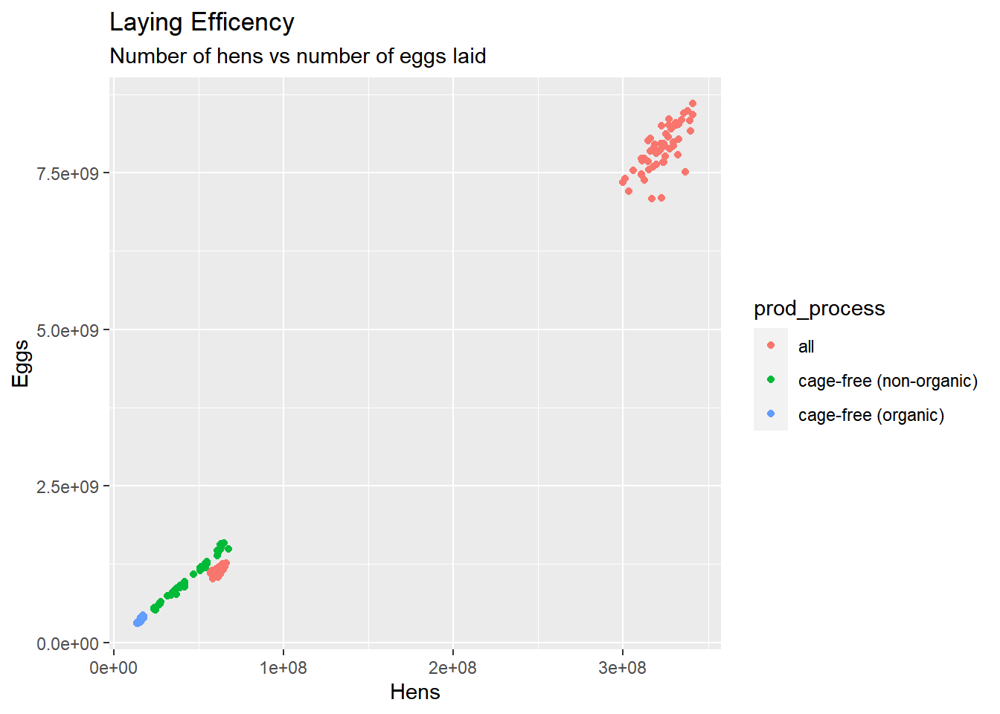
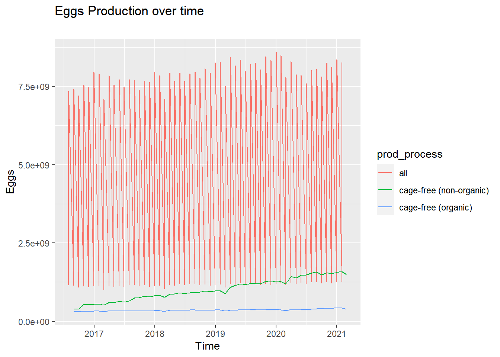
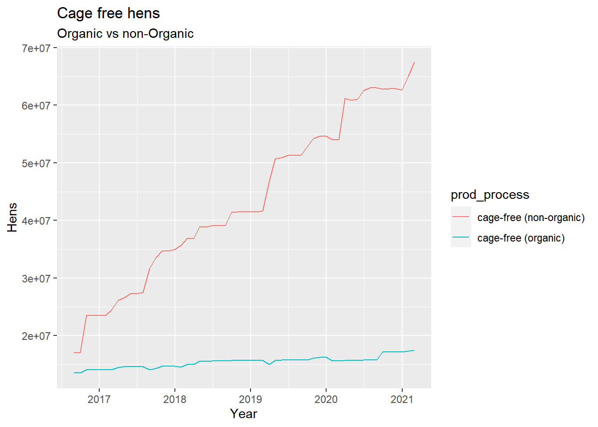
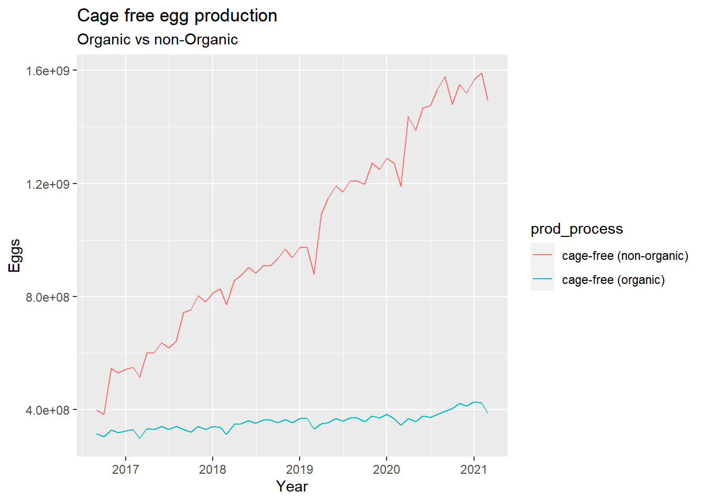

Warning: package 'broom' was built under R version 4.2.3
Warning: package 'dials' was built under R version 4.2.3
Warning: package 'infer' was built under R version 4.2.2
Warning: package 'modeldata' was built under R version 4.2.2
Warning: package 'parsnip' was built under R version 4.2.3
Warning: package 'recipes' was built under R version 4.2.3
Warning: package 'rsample' was built under R version 4.2.2
Warning: package 'tune' was built under R version 4.2.3
Warning: package 'workflows' was built under R version 4.2.3
Warning: package 'workflowsets' was built under R version 4.2.3
Warning: package 'yardstick' was built under R version 4.2.2
── Conflicts ───────────────────────────────────────── tidymodels_conflicts() ──
✖ scales::discard() masks purrr::discard()
✖ dplyr::filter() masks stats::filter()
✖ recipes::fixed() masks stringr::fixed()
✖ dplyr::lag() masks stats::lag()
✖ yardstick::spec() masks readr::spec()
✖ recipes::step() masks stats::step()
• Learn how to get started at https://www.tidymodels.org/start/
library(dplyr)library(ranger)
Warning: package 'ranger' was built under R version 4.2.3
library(rpart)
Warning: package 'rpart' was built under R version 4.2.3
Attaching package: 'rpart'
The following object is masked from 'package:dials':
prune
library(glmnet)
Warning: package 'glmnet' was built under R version 4.2.3
Loading required package: Matrix
Warning: package 'Matrix' was built under R version 4.2.3
Attaching package: 'Matrix'
The following objects are masked from 'package:tidyr':
expand, pack, unpack
Loaded glmnet 4.1-7
library(rpart.plot)
Warning: package 'rpart.plot' was built under R version 4.2.3
library(vip)
Warning: package 'vip' was built under R version 4.2.3
Attaching package: 'vip'
The following object is masked from 'package:utils':
vi
# Get the Data# Read in with tidytuesdayR package # Install from CRAN via: install.packages("tidytuesdayR")# This loads the readme and all the datasets for the week of interest# Either ISO-8601 date or year/week works!tuesdata <- tidytuesdayR::tt_load('2023-04-11')
--- Compiling #TidyTuesday Information for 2023-04-11 ----
--- There are 2 files available ---
--- Starting Download ---
Downloading file 1 of 2: `egg-production.csv`
Downloading file 2 of 2: `cage-free-percentages.csv`
--- Download complete ---
tuesdata <- tidytuesdayR::tt_load(2023, week =15)
--- Compiling #TidyTuesday Information for 2023-04-11 ----
--- There are 2 files available ---
--- Starting Download ---
Downloading file 1 of 2: `egg-production.csv`
Downloading file 2 of 2: `cage-free-percentages.csv`
--- Download complete ---
summary(tuesdata)
Length Class Mode
egg-production 6 spec_tbl_df list
cage-free-percentages 4 spec_tbl_df list
This dataset tracks the supply of cage-free eggs in the United States from December 2007 to February 2021. For TidyTuesday we’ve used data through February 2021, but the full dataset, with data through the present, is available in the OSF project.
In this project, they synthesize an analysis-ready data set that tracks cage-free hens and the supply of cage-free eggs relative to the overall numbers of hens and table eggs in the United States. The data set is based on reports produced by the United States Department of Agriculture (USDA), which are published weekly or monthly. They supplement these data with definitions and a taxonomy of egg products drawn from USDA and industry publications. The data include flock size (both absolute and relative) and egg production of cage-free hens as well as all table-egg-laying hens in the US, collected to understand the impact of the industry’s cage-free transition on hens. Data coverage ranges from December 2007 to February 2021.
Egg Production
variable
class
description
observed_month
double
Month in which report observations are collected,Dates are recorded in ISO 8601 format YYYY-MM-DD
prod_type
character
type of egg product: hatching, table eggs
prod_process
character
type of production process and housing: cage-free (organic), cage-free (non-organic), all. The value ‘all’ includes cage-free and conventional housing.
n_hens
double
number of hens produced by hens for a given month-type-process combo
n_eggs
double
number of eggs producing eggs for a given month-type-process combo
source
character
Original USDA report from which data are sourced. Values correspond to titles of PDF reports. Date of report is included in title.
Cage Free Percentages
variable
class
description
observed_month
double
Month in which report observations are collected,Dates are recorded in ISO 8601 format YYYY-MM-DD
percent_hens
double
observed or computed percentage of cage-free hens relative to all table-egg-laying hens
percent_eggs
double
computed percentage of cage-free eggs relative to all table eggs,This variable is not available for data sourced from the Egg Markets Overview report
source
character
Original USDA report from which data are sourced. Values correspond to titles of PDF reports. Date of report is included in title.
#Exploring Egg Production
tibble(eggproduction)
# A tibble: 220 × 6
observed_month prod_type prod_process n_hens n_eggs source
<date> <chr> <chr> <dbl> <dbl> <chr>
1 2016-07-31 hatching eggs all 57975000 1147000000 ChicEggs-09-23…
2 2016-08-31 hatching eggs all 57595000 1142700000 ChicEggs-10-21…
3 2016-09-30 hatching eggs all 57161000 1093300000 ChicEggs-11-22…
4 2016-10-31 hatching eggs all 56857000 1126700000 ChicEggs-12-23…
5 2016-11-30 hatching eggs all 57116000 1096600000 ChicEggs-01-24…
6 2016-12-31 hatching eggs all 57750000 1132900000 ChicEggs-02-28…
7 2017-01-31 hatching eggs all 57991000 1123400000 ChicEggs-03-21…
8 2017-02-28 hatching eggs all 58286000 1014500000 ChicEggs-04-21…
9 2017-03-31 hatching eggs all 58735000 1128500000 ChicEggs-05-22…
10 2017-04-30 hatching eggs all 59072000 1097200000 ChicEggs-06-23…
# ℹ 210 more rows
ggplot() +geom_point(data = eggproduction, aes(x = n_hens, y = n_eggs, color = prod_process), shape =19) +ggtitle("Laying Efficency", subtitle ="Number of hens vs number of eggs laid") +labs(x ="Hens", y ="Eggs")

ggplot() +geom_point(data = eggproduction, aes(x = n_hens, y = n_eggs, color = prod_process), shape =19) +ggtitle("Laying Efficency", subtitle ="Number of hens vs number of eggs laid") +labs(x ="Hens", y ="Eggs") +xlim(0, 70000000) +ylim(0, 1700000000)
ggplot() +geom_line(data = eggproduction, aes(x = observed_month, y = n_eggs, color = prod_process)) +ggtitle("Eggs Production over time", subtitle ="") +labs(x ="Time", y ="Eggs")

#Exploring Cage Free %
tibble(cagefreepercentages)
# A tibble: 96 × 4
observed_month percent_hens percent_eggs source
<date> <dbl> <dbl> <chr>
1 2007-12-31 3.2 NA Egg-Markets-Overview-2019-10-19.pdf
2 2008-12-31 3.5 NA Egg-Markets-Overview-2019-10-19.pdf
3 2009-12-31 3.6 NA Egg-Markets-Overview-2019-10-19.pdf
4 2010-12-31 4.4 NA Egg-Markets-Overview-2019-10-19.pdf
5 2011-12-31 5.4 NA Egg-Markets-Overview-2019-10-19.pdf
6 2012-12-31 6 NA Egg-Markets-Overview-2019-10-19.pdf
7 2013-12-31 5.9 NA Egg-Markets-Overview-2019-10-19.pdf
8 2014-12-31 5.7 NA Egg-Markets-Overview-2019-10-19.pdf
9 2015-12-31 8.6 NA Egg-Markets-Overview-2019-10-19.pdf
10 2016-04-30 9.9 NA Egg-Markets-Overview-2016-12-02.pdf
# ℹ 86 more rows
ggplot() +geom_line(data = cagefreepercentages, aes(x = observed_month, y = percent_eggs), color ='darkgreen') +geom_line(data = cagefreepercentages, aes(x = observed_month, y = percent_hens), color ='brown') +ggtitle("% Hens and Eggs relative to all Tables", subtitle ="") +labs(x ="Year", y ="Hens & Eggs (%)")
Warning in inner_join(cagefreepercentages, eggproduction, by = "observed_month"): Detected an unexpected many-to-many relationship between `x` and `y`.
ℹ Row 11 of `x` matches multiple rows in `y`.
ℹ Row 2 of `y` matches multiple rows in `x`.
ℹ If a many-to-many relationship is expected, set `relationship =
"many-to-many"` to silence this warning.
tibble(ALLdata)
# A tibble: 238 × 9
observed_month percent_hens percent_eggs source.x prod_type prod_process
<date> <dbl> <dbl> <chr> <chr> <chr>
1 2016-08-31 10.1 9.63 computed hatching… all
2 2016-08-31 10.1 9.63 computed table eg… all
3 2016-08-31 10.1 9.63 computed table eg… cage-free (…
4 2016-08-31 10.1 9.63 computed table eg… cage-free (…
5 2016-08-31 12 NA Egg-Markets-… hatching… all
6 2016-08-31 12 NA Egg-Markets-… table eg… all
7 2016-08-31 12 NA Egg-Markets-… table eg… cage-free (…
8 2016-08-31 12 NA Egg-Markets-… table eg… cage-free (…
9 2016-09-30 10.1 9.56 computed hatching… all
10 2016-09-30 10.1 9.56 computed table eg… all
# ℹ 228 more rows
# ℹ 3 more variables: n_hens <dbl>, n_eggs <dbl>, source.y <chr>
ggplot() +geom_line(data = allclean, aes(x = observed_month, y = n_hens, colour = prod_process)) +ggtitle("Cage free hens", subtitle ="Organic vs non-Organic") +labs(x ="Year", y ="Hens")

ggplot() +geom_line(data = allclean, aes(x = observed_month, y = n_eggs, colour = prod_process)) +ggtitle("Cage free egg production", subtitle ="Organic vs non-Organic") +labs(x ="Year", y ="Eggs")

As the demand for cage free eggs increases so do the number of hens producing them.However, it seems like egg production may be less efficient in organic hens. We are going to explore!
#Fitting a model ##Hypothesis: Non-organic egg production is more efficient (more eggs produced per hen), then organic egg production in cage-free facilities.
###Data Setup
#prepare data for machine learningset.seed(123)# Fix the random numbers by setting the seed cdata_split <-initial_split(allclean, prop =2.8/4, strata = prod_process) #70% training, 30% testing# Create data frames for the two sets:train_cdata <-training(cdata_split)test_cdata <-testing(cdata_split)#5-fold cross-validation, 5 times repeatedfold_cdata <-vfold_cv(train_cdata, v =5, repeats =5, strata = prod_process)#Create a recipe for the data and fitting. data_recipe <-recipe(prod_process ~ ., data = train_cdata) %>%step_dummy(all_nominal(), -all_outcomes())